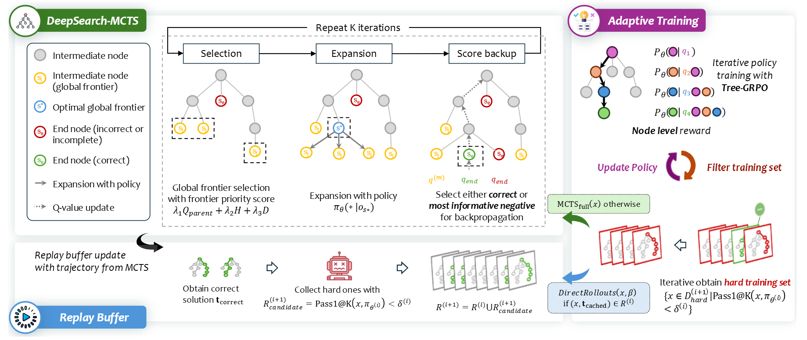
DeepSearch: Overcome the Bottleneck of Reinforcement Learning with Verifiable Rewards via Monte Carlo Tree Search.
Fang Wu*, Weihao Xuan*, Heli Qi*, Ximing Lu, Aaron Tu, Li Erran Li, Yejin Choi†
Under Review
[Paper]
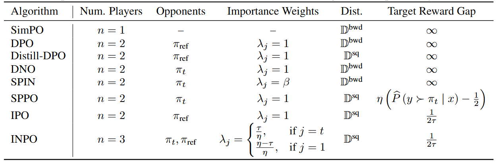
Multiplayer Nash Preference Optimization.

Fang Wu*, Xu Huang*, Weihao Xuan, Zhiwei Zhang, Yijia Xiao, Guancheng Wan, Xiaomin Li, Bing Hu, Peng Xia, Jure Leskovec, Yejin Choi†
Under Review
[Paper]
[Code]
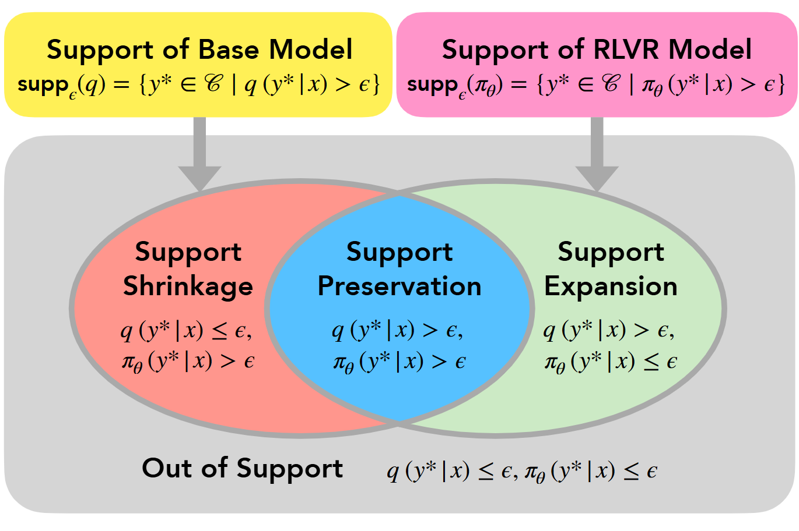
The Invisible Leash: Why RLVR May Not Escape Its Origin.
Fang Wu*, Weihao Xuan*, Ximing Lu, Zaid Harchaoui, Yejin Choi†
Under Review
[Paper]
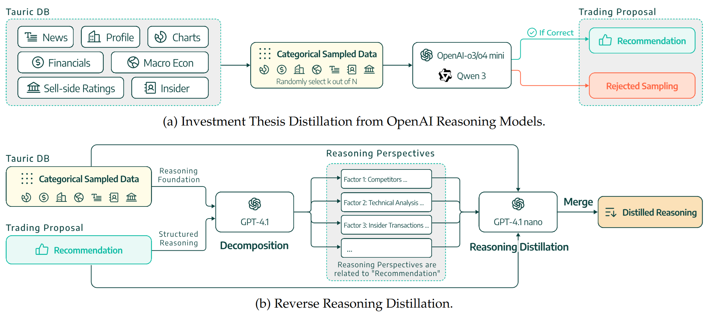
Trading-R1: Financial Trading with LLM Reasoning via Reinforcement Learning.

Yijia Xiao, Edward Sun, Tong Chen, Fang Wu, Di Luo, Wei Wang†
Under Review
[Paper]
[Code]
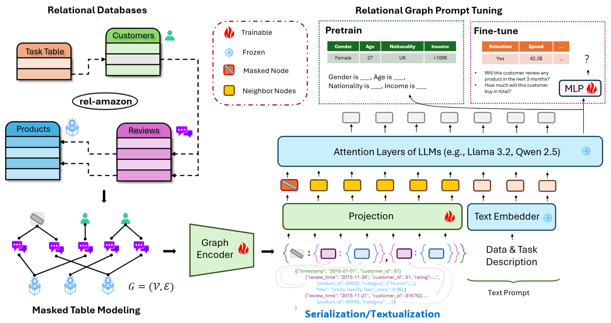
Large Language Models are Good Relational Learners.

Fang Wu, Vijay Prakash Dwivedi, Jure Leskovec†
ACL 2025
[Paper]
[Code]
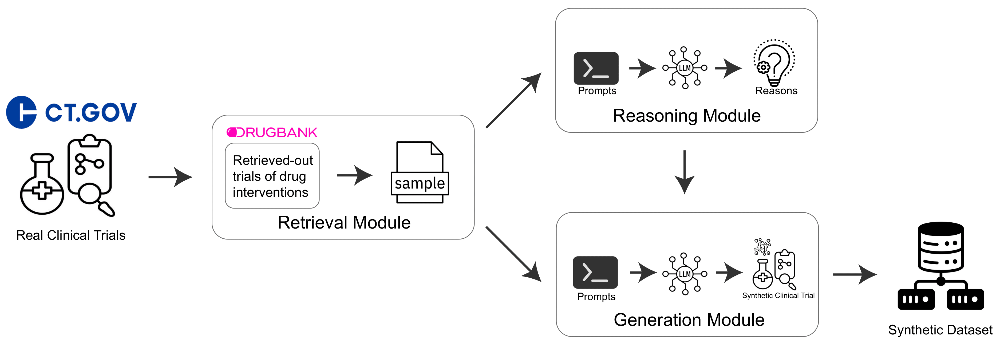
Retrieval-Reasoning Large Language Model-based Synthetic Clinical Trial Generation

Zerui Xu, Fang Wu, Tianfan Fu, Yue Zhao†
ACM BCB 2025
[Paper]
[Code]
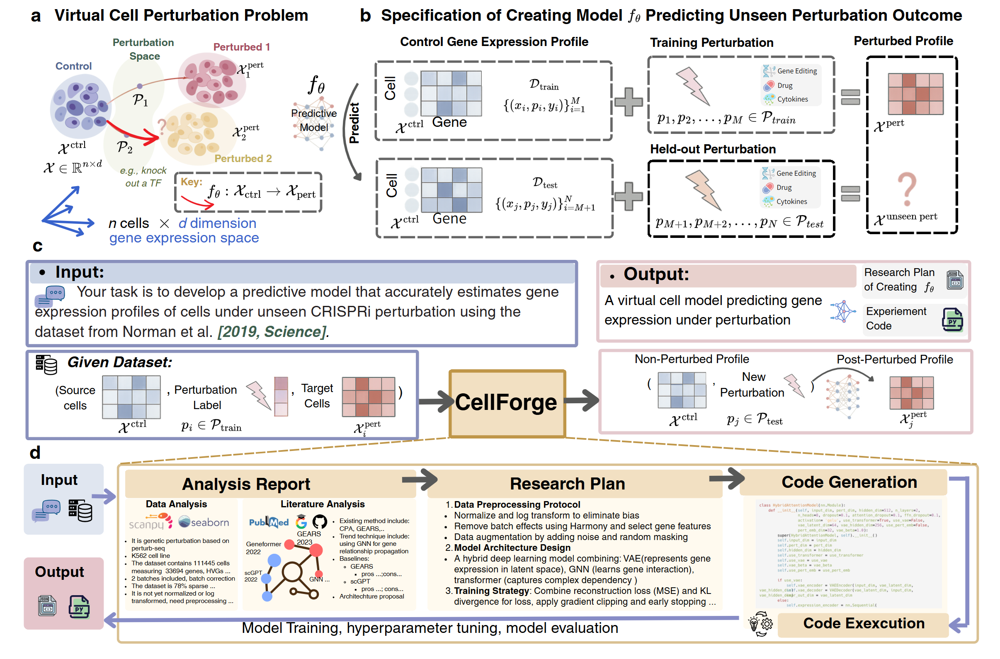
CellForge: Agentic Design of Virtual Cell Models

Xiangru Tang*, Zhuoyun Yu*, Jiapeng Chen*, Yan Cui, Daniel Shao, Weixu Wang, Fang Wu, Yuchen Zhuang, Wenqi Shi,
Zhi Huang, Arman Cohan, Xihong Lin, Fabian Theis, Smita Krishnaswamy, Mark Gerstein†
Under Review
[Paper]
[Code]
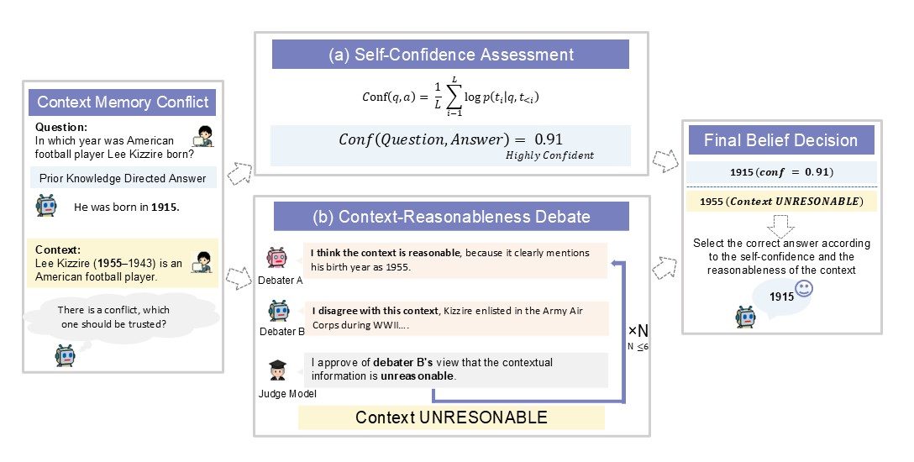
When to Trust Context: Agentic Debates for Context Reliability

Zeqi Zhou*, Fang Wu*†, Shayan Talaei*, Haokai Zhao, Cheng Meixin, Tinson Xu, Amin Saberi, Yejin Choi
ACL 2025 KnowFM Workshop
[Paper]
[Code]
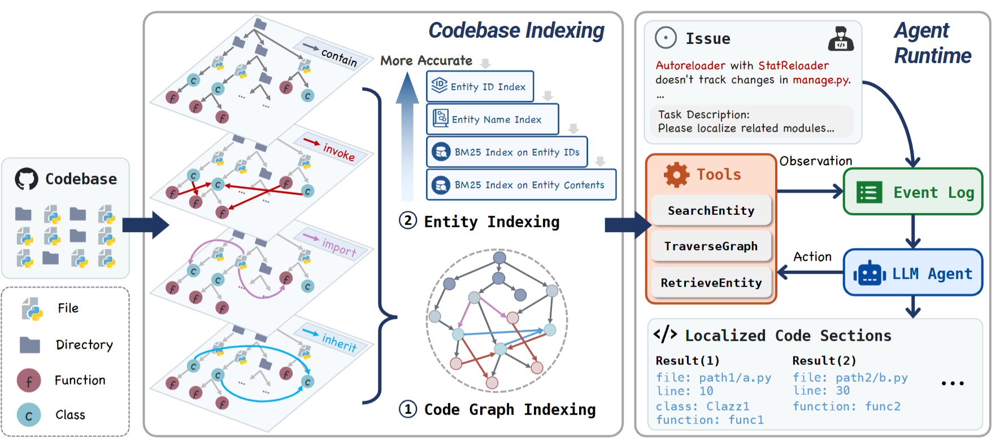
LocAgent: Graph-Guided LLM Agents for Code Localization.

Zhaoling Chen*, Xiangru Tang*, Gangda Deng*, Fang Wu, Jialong Wu, Zhiwei Jiang, Viktor Prasanna, Arman Cohan, Xingyao Wang†
ACL 2025
[Paper]
[Code]
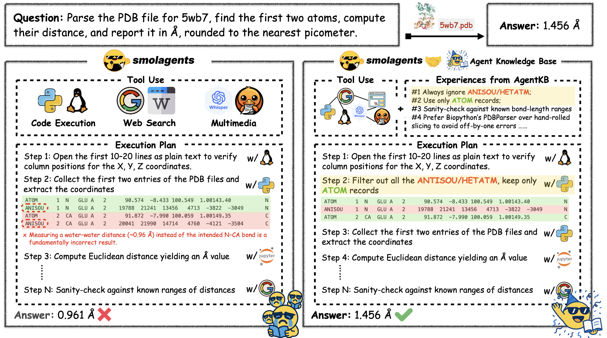
Agent KB: Leveraging Cross-Domain Experience for Agentic Problem Solving.

Xiangru Tang*, Tianrui Qin*, Tianhao Peng*, Ziyang Zhou, Daniel Shao, Tingting Du, Xinming Wei, Peng Xia, Fang Wu, He Zhu, Ge Zhang, Jiaheng Liu,
Xingyao Wang, Sirui Hong, Chenglin Wu, Hao Cheng, Chi Wang, Wangchunshu Zhou†
Under Review
[Paper]
[Code]
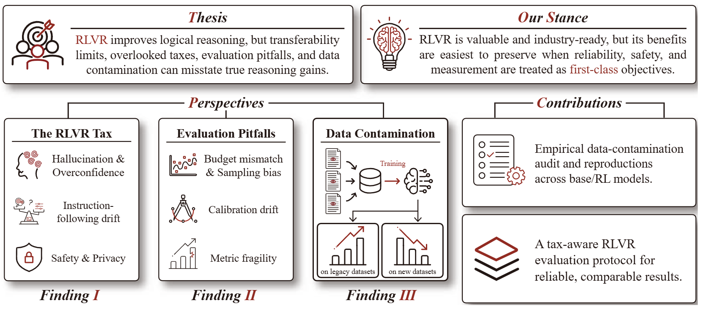
Position: The Hidden Costs and Measurement Gaps of Reinforcement Learning with Verifiable Rewards.
Aaron Tu*, Weihao Xuan*, Heli Qi*, Xu Huang, Qingcheng Zeng, Shayan Talaei, Yijia Xiao, Peng Xia, Xiangru Tang, Yuchen Zhuang, Bing Hu,
Hanqun Cao, Wenqi Shi, Tianang Leng, Rui Yang, Yingjian Chen, Ziqi Wang, Irene Li, Nan Liu, Huaxiu Yao, Li Erran Li, Ge Liu, Amin Saberi,
Naoto Yokoya, Jure Leskovec, Yejin Choi, Fang Wu*,†
Under Review
[Paper]
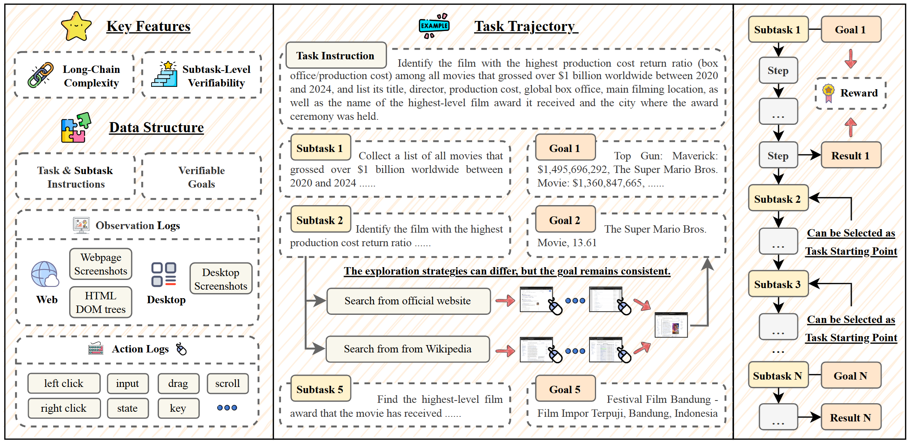
VeriGUI: Verifiable Long-Chain GUI Dataset

Shunyu Liu, Minghao Liu, Huichi Zhou, Zhenyu Cui, Yang Zhou, Yuhao Zhou, Wendong Fan, Ge Zhang, Jiajun Shi, Weihao Xuan, Jiaxing Huang, Shuang Luo,
Fang Wu, Heli Qi, Qingcheng Zeng, Ziqi Ren, Jialiang Gao, Jindi Lv, Junjie Wang, Aosong Feng, Heng Zhou, Wangchunshu Zhou, Zhenfei Yin, Wenlong Zhang, Guohao Li,
Wenhao Yu, Irene Li, Lei Ma, Lei Bai, Qunshu Lin, Mingli Song, Dacheng Tao†
Under Review
[Paper]
[Code]
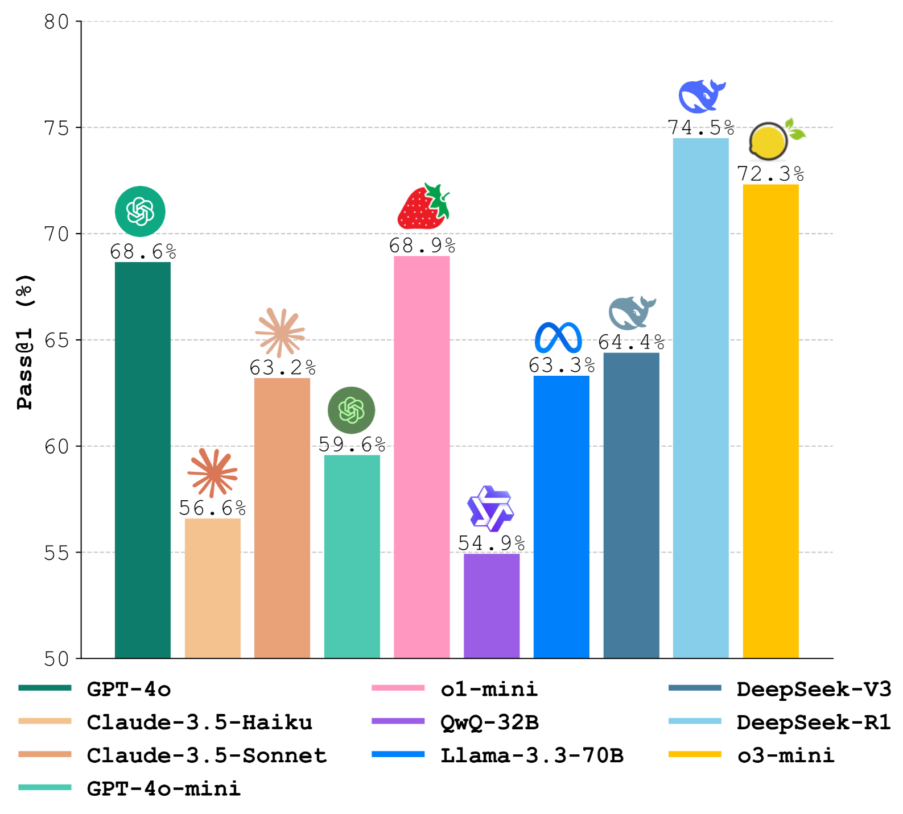
MedAgentsBench: Benchmarking Thinking Models and Agent Frameworks for Complex Medical Reasoning

Xiangru Tang*, Daniel Shao*, Jiwoong Sohn*, Jiapeng Chen, Jiayi Zhang, Jinyu Xiang, Fang Wu, Yilun Zhao, Chenglin Wu, Wenqi Shi,
Arman Cohan, Mark Gerstein†
Under Review
[Paper]
[Code]
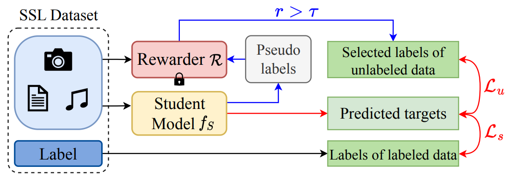
SemiReward: A General Reward Model for Semi-supervised Learning

Siyuan Li*, Weiyang Jin*, Zedong Wang, Fang Wu,, Zicheng Liu, Cheng Tan, Stan Z. Li†
ICLR 2024
[Paper]
[Code]
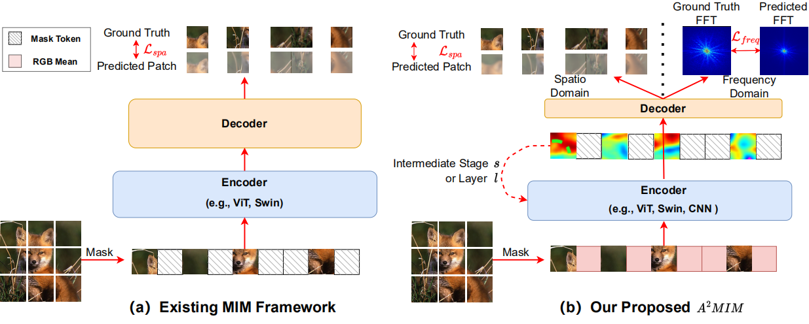
Architecture-Agnostic Masked Image Modeling: From ViT back to CNN

Siyuan Li*, Di Wu*, Fang Wu, Zelin Zang, Kai Wang, Lei Shang, Baigui Sun, Hao Li, Stan Z. Li†
ICML 2023
[Paper]
[Code]